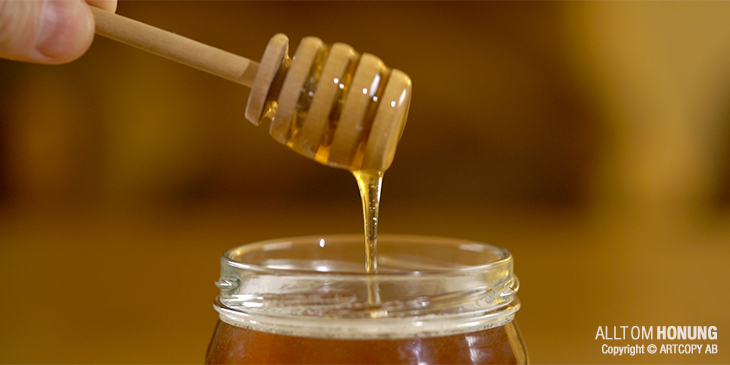
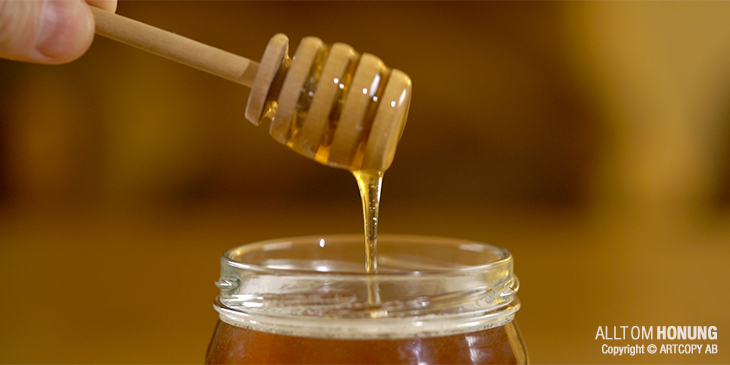

Om honung
Honung är binas vinterförråd av energi. När cellerna täcks med vax är honungen klar för skörd.
Skörd
Man använder en honungsslunga för att separera honungen från vaxet. Ta aldrig all honung — bina behöver också sin del.
Honung är binas vinterförråd av energi. När cellerna täcks med vax är honungen klar för skörd.
Man använder en honungsslunga för att separera honungen från vaxet. Ta aldrig all honung — bina behöver också sin del.